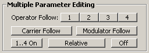
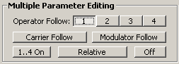

Multiple Parameter Editing

This little panel of buttons is where you can set up multiple parameter
editing. This is based on the concept of "following operators", where the
edits you make to one operator will be followed by other operators.
Operator Follow 1..4
The 1 through 4 buttons turn on following for that particular
operator, which causes that operator to follow any edits you make to any other
operator-specific parameter. This includes any of the output section controls,
frequency controls, EG controls (with the exception of operator 1 shift, since
it's permanently disabled), and EG bias sensitivity.
For example, if you activate the 1 button, like so:

and you begin to edit the output level for operator 2, then the slider for
operator 1 will be highlighted in red:

and any change you make to operator 2 will also be made to operator 1. This
isn't restricted to edits on operator 2, though. Operator 1 will also follow
edits you make to operator 3 or operator 4. So, buttons 1 through
4 will turn on following for the corresponding operator.
Carrier Follow And Modulator Follow
Carrier Follow and Modulator Follow are similar, but make the
carrier operators follow each other and the modulator operators follow each
other, these two being independent of each other. For example, if you have
algorithm 5 selected (which has operators 1 and 3 as carriers, and 2 and 4 as
modulators) and you turn on Carrier Follow, then operator 3 will follow
edits you make to operator 1, and operator 1 will follow edits you make to
operator 3. Edits you make to operators 1 and 3 when Carrier Follow is
on won't affect operators 2 or 4, because 2 and 4 are modulators. It's easier
to understand by playing with it, rather than reading an explanation, so
experiment. Just note that when you select a control, any controls that are
following your edits will be highlighted in red (or whatever you have the
current highlight color set to in
Set Highlight Color...).
The Carrier/Modulator Follow and Operator Follow functions are
mutually exclusive of each other, so for example if you have operator 1 follow
on, and you turn on carrier follow, then operator 1 follow will be turned off.
Relative/Absolute
Following edits can be done on a relative or absolute basis. Clicking the
Relative button will change it to Absolute. When Relative
is selected, then, going by the example, operator 1 will change by one if you
change operator 2 by one, five if you change operator 2 by five, etc. When
absolute is selected, the output level of operator 1 will be set to the
same value as you change the output level of operator 2.
1..4 On
This is just a shortcut to turn on following for all four operators at once.
Off
A shortcut to turn all following off.